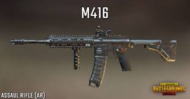
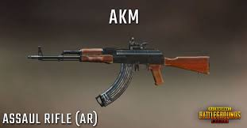
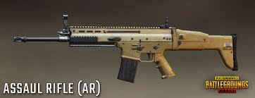

M416

The bullet velocity is 880 m/s, which is slightly faster than the Scar-L, but lower than the M16. You can achieve the maximum DPS of 476 while spraying with this gun, and you’ll be able to completely finish an entire 40-round extended magazine in just 2.9 seconds.
The recoil of the M416 is amazing, and this is one of the strongest arguments to pick up this gun. Because of the very low horizontal recoil, sprays will be easy to control and this will ensure that more bullets hit the target. Another very important feature of the M416 is the single tap vertical recoil.
AKM

The AKM is an assault rifle in PlayerUnknown's Battlegrounds and is known for its extreme stopping power. Chambering 7.62mm ammo in 30-round magazines, the weapon is ideal for close-quarter combat and medium-ranged gunfights, dealing 49 base damage (highest base damage amongst assault rifles). An AKM with a single shot mode is one's best friend, and one should seldom use the automatic mode unless one encounters action at close distances.
Scar-L

SCAR-L fires 5.56mm rounds and has both a single and a full auto mode. Light recoil, stability, and accuracy make this weapon easier to master. Its rate of fire is lower than other 5.56mm rifles. But a fine weapon nonetheless.
The recoil of the SCAR-L is amazing, and this is one of the strongest arguments to pick up this gun. Because of the very low horizontal recoil, sprays will be easy to control and this will ensure that more bullets hit the target. Another very important feature of the SCAR-L is the single tap vertical recoil.